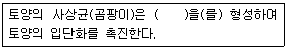
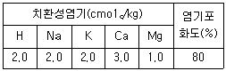

유기농업기사 (2006-08-06 기출문제)
1과목: 재배원론
1. 질산태질소(NO3)에 관한 설명으로 맞는 것은?
- 밭 작물에서 추비로서는 적합하지 않다.
- 물에 잘 녹지 않으며 작물의 이용형태는 질소를 잘 흡수, 이용하지만 지효성이다.
- 논에서는 탈질작용으로 유실이 심하다.
- 논에서 환원층에 주면 비효가 오래 지속된다.
(정답률: 91%)

2. 도복지수를 계산하는데 거리가 먼 것은?
- 지상부 무게
- 줄기의 좌절중
- 잎의 두께
- 줄기 길이(키)
(정답률: 84%)
3. 재배조건에 따른 T/R율을 올바르게 설명한 것은?
- 질소비료를 많이 주면 T/R율이 감소한다.
- 토양수분이 감소하면 T/R율은 증대한다.
- 일사량이 부족하면 T/R율이 증대된다.
- 토양 통기가 불량하면 T/R율은 감소한다.
(정답률: 20%)
4. 벼의 생육과정에서 지상부에 대한 뿌리의 건물중 비율이 가장 높은 생육시기는?
- 분얼초기
- 신장기
- 출수기
- 등숙기
(정답률: 알수없음)
5. 다음 식물호르몬에 관한 설명 중 잘못된 것은?
- 오옥신(auxin)은 주로 세포의 신장촉진의 역할을 한다.
- ABA(abscisic acid)는 잎의 노화,낙엽을 촉진한다.
- GA(gibberellin)는 정아우세현상에 관여한다.
- 사이토카이닌(cytokinin)은 세포분열을 촉진한다.
(정답률: 알수없음)
6. 상적발육설에 관한 설명 중 틀린 것은?
- 작물의 발육이란 체내의 순차적인 질적 재조정 작용을 말한다.
- 1년생 종자식물의 발육상은 개개의 단계에 의해서 구성되어 있다.
- 개개의 발육상은 서로 접속해서 성립되어 있으며 앞의 발육상을 경과해야 다음 발육상으로 이행을 할 수 있다.
- 1개의 식물체가 개개의 발육상을 경과 하려면 발육상에 따라 서로 다른 특정한 환경조건은 필요없다.
(정답률: 알수없음)
7. 다음 중 작물의 신장 생장을 가장 억제하는 광선은?
- 자외선
- 적외선
- 적색광
- 청색광
(정답률: 알수없음)
8. 다음 중 화곡류의 성숙과정으로 옳은 것은?
- 유숙 - 호숙 - 황숙 - 완숙 - 고숙
- 호숙 - 황숙 - 완숙 - 고숙 - 유숙
- 황숙 - 완숙 - 고숙 - 유숙 - 고숙
- 완숙 - 고숙 - 유숙 - 고숙 - 황숙
(정답률: 알수없음)
9. 종자 휴면의 원인과 관련이 없는 것은?
- 경실 종자
- 종피의 기계적 저항
- 성숙 배
- 종피의 불투기성(不透氣性)
(정답률: 92%)
10. 어느 작물의 요수량이 500 이라면 소비된 물의 양은?
- 0.5kg
- 5kg
- 50kg
- 500kg
(정답률: 64%)
11. 식물체내에서 합성되는 옥신과 비슷한 활성을 나타내는 인공 합성물질은?
- indole - 3 - acetic acid
- α - phenylacetic acid
- α - naphthaleneacetic acid
- 3 - indoleacetonitrile
(정답률: 40%)
12. 식물체의 흡수량이 결핍디면 식물체 내에 이상현상(생장점이 말라 죽음, 줄기가 연약해 짐, 하엽의 탈락)이 발생되어 한해에 약하게 되는 것은?
- 질소
- 인
- 칼륨
- 칼슘
(정답률: 75%)
13. 습해 대책으로 적합하지 않은 것은?
- 밭에서는 휴립휴파 재배를 한다.
- 배수시설을 설치한다.
- 과산화석회(CaO2)를 종자에 분의하여 파종한다.
- 미숙 유기물을 시용하여 입단형성을 촉진시킨다.
(정답률: 55%)
14. CO2 시비의 농도를 일정하게 맞추어 줌으로써 발생하는 효과로 틀린 것은?
- 수량 증가
- 개화 수 증가
- 광합성 속도 증대
- 병해충 감소
(정답률: 82%)
15. 도복의 유발조건을 바르게 설명한 것은?
- 키가 큰 품종은 대가 튼튼해도 도복이 심하다.
- 칼륨, 규산이 부족하면 도복이 유발된다.
- 토양환경과 도복은 상관이 없다.
- 밀식은 도복을 적게 한다.
(정답률: 59%)
16. 식물의 생산량(수량)은 가장 소량으로 존재하는 무기성분에 의해 지배받는다는 최소율 법칙을 주장한 학자는?
- Liebig
- Muller
- Millardet
- Leeuwenho
(정답률: 85%)
17. 화성유도에 저온 , 장일이 필요한 식물의 그 대체 효과를 갖는 생장조절제로 적합한 것은?
- 오옥신(Auxin)
- 지베렐린(Gibberellin)
- 사이토카이닌(Cytokinin)
- 에틸렌(Ethylene)
(정답률: 40%)
18. 최적엽면적(Optimum leaf area)에 대한 설명으로 틀린 것은?
- 군락상태에서 건물생산을 최대로 할 수 있는 엽면적이다.
- 군락의 최적엽면적은 생육시기, 일사량, 수광태세 등에 따라 다르다.
- 일사량이 낮을수록 최적엽면적지수는 커진다.
- 최적엽면적지수를 크게 하는 것은 군락의 건물 생산능력을 크게 하여 수량을 증대시킨다
(정답률: 알수없음)
19. 작물을 생육형에 따라 분류할 때 틀린 것은?
- 벼-주형(株型)
- 고구마 -포복형(匍匐型)
- 오차드그래스-주형(株型)
- 수단그래스-하번초(下繁草)
(정답률: 67%)
20. 작물의 자연분화(自然分化) 발달과정에서 첫 단계는?
- 지리적 고립
- 도태와 적응
- 유전적 변이
- 인위돌연변이
(정답률: 알수없음)
2과목: 토양비옥도 및 관리
21. 토양을 구성하는 주요 광물 중 석영의 입자밀도(particledensity)는?
- 2.65gㆍcm-3
- 2.95gㆍcm-3
- 3.65gㆍcm-3
- 4.55gㆍcm-3
(정답률: 75%)
22. 다음( )에 들어갈 말로 가장 옳은 것은?

- 항생물질
- 균사
- 뿌리혹박테리아
- 황세균
(정답률: 73%)
23. 형태론적 토양분류체계에서 주로 화산분출에 의해 형성된 화산회토양을 의미하는 토양목은?
- Andisol
- Aridisol
- Oxisol
- Histosol
(정답률: 알수없음)
24. 토양 입단구조의 중요성에 대한 설명 중 가장 거리가 먼것은?
- 토양의 통기성과 통수성에 영향을 미친다.
- 토양 침식을 억제한다.
- 토양내에 호기성미생물의활성을 증대시킨다.
- Na 이온은 토양의 입단화를 촉진시킨다.
(정답률: 70%)
25. 토양교질에 대한 설명으로 틀린 것은?
- 입경이 1㎛이하인 입자를 말한다.
- 단위 g당 입자 표면적이 미사보다 크다.
- 낮은 수분 보유능력을 가지고 있다.
- 양이온 치환능력을 가지고 있다.
(정답률: 알수없음)
26. 토양단면의 층위를 나타내는 기호로서 유기물과 점토성분이 용탈되는 층을 의미하는 것은?
- O층
- A층
- B층
- C층
(정답률: 73%)
27. 토양의 생성에 관여하는 다음의 풍화작용 중에서 그 성질이 다른 것은?
- 산화작용
- 가수분해작용
- 수화작용
- 침식작용
(정답률: 75%)
28. 토양 pH와 인산의 유효도 관계에 대한 설명 중 맞는 것은?
- pH가 낮을수록 인산의 유효도는 높아진다.
- pH가 중성 부근일 때 인산의 유효도가 가장 높다.
- pH가 높을수록 인산의 유효도는 높아진다.
- pH는 인산의유효도에 영향을 미치지 않는다.
(정답률: 73%)
29. 토양미생물이 고등식물에 끼치는 유익작용은?
- 각종 병을 일으킨다.
- 황산염을 환원한다.
- 탈질작용을한다.
- 공기중유리질소를고정한다.
(정답률: 82%)
30. 치환산도 측정을 위해 수소이온 침출용으로 어떤 용액을 주로 사용하는가?
- KCL
- NaCL
- H2O
- H2O2
(정답률: 85%)
31. 부식이 토양의 보비력을 증가시키는 가장 큰 이유는?
- 토양 입단구조를 발달시키기 때문에
- 미생물의 활성을 촉진하기 때문에
- 염기치환용량이 크기 때문에
- 토양 완충능을 증가시키기 때문에
(정답률: 60%)
32. 토양의 pH가 5일 때 토양용액 중에 가장 많이 존재하는 인의 형태는?
- H3PO4
- HPO4-2
- H2PO4-
- PO4-3
(정답률: 50%)
33. 다음의 점토광물 중 동형치환이 거의 발생하지 않는 광물은?
- Kaolinite
- Vermiculite
- Smectite
- Montmorillonite
(정답률: 55%)
34. 부식의 기능에 대한 설명으로 가장 거리가 먼 것은?
- 물을 보유하는 힘을 높여준다.
- 중금속의 피해를 감소시킨다.
- 토양구조의 분산을 증가시킨다.
- 토양의 입단구조를 조장한다.
(정답률: 67%)
35. 과다시비에 의한 수자원의 부영양화 및 유아의 메트헤모글로빈혈증(methemoglobinemia, 일명 청색증)과 밀접하게 관련되는 것은?
- 칼리
- 질소
- 인산
- 석회
(정답률: 67%)
36. 다음 표에 표시된 염기포화도가 80%인 치환성 염기를 보유한 토양의 양이온치환용량은?

- 4 cmolc /kg
- 8 cmolc /kg
- 10 cmolc /kg
- 12 cmolc /kg
(정답률: 37%)
37. 특이산성 토양의 특성에 대한 설명으로 옳지 않은 것은?
- 강하류의 배수불량한 지역에 주로 분포한다.
- 토양을 건조시키면 황이 산화되어 pH 3.5 정도까지 낮아진다.
- 미생물 활동으로 유기물 분해가 잘 된다.
- 활성 알루미늄의 함량이 높다.
(정답률: 42%)
38. 토양에서 유기 모재의 근본이 되며 부식 중에 많이 함유된 물질은?
- 왁스류
- 리그닌
- 당질
- 헤미셀룰로스
(정답률: 64%)
39. 미생물의 에너지원과 영양원으로 작용하는 물질로 구성된것은?
- 규소 - 붕소
- 탄소 - 질소
- 염소 - 인
- 비소 - 철
(정답률: 알수없음)
40. 토양의 결정성광물을 확인하는 방법으로 가장 많이 이용되고 있는 방법은?
- 시차열분석법
- 적외선분광법
- X-선회절법
- 화학분석법
(정답률: 46%)
3과목: 유기농업개론
41. 한 포장에 연작을 하지 않고 몇가지 작물을 특정한 순서로 반복하여 재배하는 것은?
- 돌려짓기
- 이어짓기
- 사이짓기
- 엇갈아짓기
(정답률: 알수없음)
42. 작물재배시 배토의 목적이라고 볼 수 없는 것은?
- 도복의 경감
- 신근발생의 억제
- 무효분얼의 억제
- 덩이줄기의 발육조장
(정답률: 50%)
43. 유기농업에서 이용할 수 있는 무농약 토양소독법과 가장 거리가 먼 것은?
- 증기이용법
- 소토법
- 태양열 소독법
- 토양 화학 살균제 처리
(정답률: 80%)
44. 유기수도작에서 벼의 시비 종류에 대한 설명으로 틀린것은?
- 밑거름은 벼의 활착과 초기생육을 촉진시키는 시비
- 가지거름은 분얼을 촉진시켜 이삭수를 확보하기 위한 시비
- 이삭거름은 영화수(穎花數)와 입중(粒重)을 증대시키기 위한 시비
- 알거름은 출수를 증대시키고 탈질과 용탈을 막기 위한 시비
(정답률: 34%)
45. 유기가축의 번식생리에서 암 가축의 난소에서 분비되는 호르몬은?
- FSH
- LH
- Estrogen
- Oxytocin
(정답률: 58%)
46. 시설재배 시에 발생하는 연작장해의 설명으로 틀린 것은?
- 시설의 이용률을 높이기 위하여 같은 작물을 반복해서 재배할 때 발생한다.
- 특정 병원 미생물이나 해충의 밀도가 높아지면서 병해충 피해가 커진다.
- 특정양분이 지속적으로 흡수 이용되기 때문에 양분결핍장해가 나타나고, 미량 요소는 풍부한 반면 다량요소의 결핍이 자주 나타난다.
- 연작장해를 예방하기 위해 합리적인 작부체계를 도입하고, 병충해를 철저히 예방하여야 한다.
(정답률: 87%)
47. 기본 집단에서 개체별이 아니라 처음부터 집단을 대상으로 선발을 계속하여 우수한 계통을 분리하는 육종방법은?
- 순계분리법
- 교잡육종법
- 계통분리법
- 집단육종법
(정답률: 67%)
48. 유기농업에서 저항성 품종을 지배하는 것은 가장 중요한 결정사항 중의 하나이다. 저항성 품종으로 가장 적절치 못한 것은?
- 병충해 저항성이 높은 품종
- 잡초 경합력이 높은 품종
- 유기농업으로 재배되어 채종된 품종
- 종자의 화학적인 소독처리를 거친 품종
(정답률: 82%)
49. 유기농업의 병해충 방제법과 가장 거리가 먼 것은?
- 경종적 방제법
- 생물학적 방제법
- 화학적 방제법
- 물리적 방제법
(정답률: 알수없음)
50. 원예작물에 사용하는 석회 보르도액 사용시 작물과 병해명이 맞는 것은?
- 가지 - 백납병
- 참외 - 탄저병
- 감자 - 역병
- 가지 - 썩음병
(정답률: 59%)
51. 다음 중 토양미생물의 역할과 가장 거리가 먼 것은?
- 농작물이 필요로 하는 영양분을 만들어 제공한다.
- 영양분을 식물체 내에 밀어 넣어주는 작용을 한다.
- 유기물을 분해하여 토양구조 상태를 정비해 준다.
- 흙미립자를 분리시켜 비가 올 때 토양침식을 일으키게 한다.
(정답률: 알수없음)
52. 유기농업이 발달하게 된 배경이 아닌 것은?
- 대량생산과 소비를 추구하는 산업화에 따른 심각한 환경오염
- 야생곤충이나 조류 등의 자연생태계의 무차별적인 파괴현상
- 음악, 영화 등 예술산업의 과도한 발전으로 정신문화퇴폐와 도덕적 해이
- 영농화학물질에 의한 수질토양오염은 물론 국민건강위협
(정답률: 77%)
53. 다음 중 타감작용이 두드러지게 나타나는 작물이라고 볼 수 없는 것은?
- 두과작물로 콩 종류와 자운영
- 상추ㆍ배추ㆍ오이
- 겨울호밀ㆍ해바라기
- 헤어리베치ㆍ메밀
(정답률: 64%)
54. 윤작의 효과에 대한 설명중 틀린 것은?
- 토양 전염성 병해충의 발생억제
- 토양 양분의 불용화
- 수량 증가와 품질향상
- 토양 통기성의 개선
(정답률: 82%)
55. 품종의 분류 중 내력에 따른 분류로 옳은 것은?
- 조생종, 중생종, 만생종
- 재래품종, 육성품종, 도입품종
- 육성품종, 종, 아종
- 일반품종, 식용품종, 특수품종
(정답률: 64%)
56. 다음은 퇴비화 과정 중 부숙되기 위한 충분한 열이 발생되지 않는 경우의 원인과 해결법이다. 그 연결이 틀린 것은?
- 지나치게 건조함 - 젖은 퇴비재료를 투입
- 지나치게 습윤함 - 마른재료를 투입하거나 다시 혼합
- 추운날씨와 작은 규모으 퇴비더미 - 퇴비더미 규모를 키우거나 퇴비재료를 더 혼입
- pH가 낮음 - 산성을 띠는 재료를 투입
(정답률: 46%)
57. 한 품종내의 유전형질이 서로 같은 집단을 무엇이라 하는가?
- 종
- 아종
- 계통
- 육종
(정답률: 74%)
58. 다음 중 두과녹비 작물이 아닌 것은?
- 동부
- 화이트클로버
- 루핀
- 수수
(정답률: 64%)
59. 유기축산에서 가축 인공수정의 장점이 아닌 것은?
- 우수한 종모축의 정액을 여러 마리의 암컷에 확대하여 수정할 수 있다.
- 가축의 개량이 촉진되고 생산성을 향상시킨다.
- 방목하는 암 가축에게 인공수정을 쉽게 할 수 있다.
- 인공수정용 냉동정액을 원거리까지 수송이 가능하다.
(정답률: 알수없음)
60. 유기농업에서는 화학비료를 대신하여 유기물을 사용하는데 유기물의 주된 기능이 아닌 것은?
- 완충력 증대
- 미생물번식 조장
- 보수 및 보비력 증대
- 지온감소
(정답률: 62%)
4과목: 유기식품 가공.유통론
61. 꿀을 넣어 반죽하여 기름에 튀기고 다시 꿀을 담그어 만든 과자류는?
- 다식류
- 산자류
- 유밀과류
- 전과류
(정답률: 64%)
62. 단백질 식품 중 어육과 식육의 부패 정도를 나타내는 화학적 지표 검사항목은?
- 휘발성염기질소(VBN)
- 경도(Hardness)
- 과산화물가(Peroxide value)
- 생균수
(정답률: 알수없음)
63. 농산물 표준규격화에 대한 설명으로 틀린 것은?
- 표준규격화는 기본적인 척도 또는 한계를 결정하는 것을 의미한다.
- 표준규격화는 유통효율성을 향상시키고 유통비용을 절감시킨다.
- 표준규격화의 기준은 산지 및 생산자에 따라 적절하게 변화되어야 한다.
- 표준규격화는 소비자의 다양한 욕구를 충족시키는데 도움이 된다.
(정답률: 50%)
64. 유기가공식품 생산 및 취급시 사용이 가능한 재료는?
- 식용색소 황색 제 5호
- 한천
- 사카린나트륨
- 안식향산나트륨
(정답률: 67%)
65. 식품의 저장 방법 중 에너지 주입에 의한 가열처리 저장 방법은?
- 농축법(Concentration)
- 한외여과법(Ultra-filtration)
- 냉장냉동법(Chilling or freezing)
- 저온 살균법(Pasteurization)
(정답률: 57%)
66. 유기 과실통조림을 제조하기 위하여 사용할 수 있는 박피 방법은?
- 증기 박피법
- 알칼리 박피법
- 산 박피법
- 산, 알칼리 병용 박피법
(정답률: 알수없음)
67. 사람 또는 가축에게 식중독을 일으키는 마이코톡신(mycotoxin)의 연결이 올바른 것은?
- 간장독 - 아플라톡신(aflatoxin) - 땅콩 - Fusarium속
- 신장독 - 시트리닌(citrinin) - 쌀 - Penicillium속
- 신경독 - 슬라프라민(slaframine) - 사료 - Aspergillus속
- 피부염 - 오크라톡신(ochratoxin) - 옥수수 - Yersinia속
(정답률: 55%)
68. 식중독과 그 예방법에 관한 내용이 옳게 연결된 것은?
- 리스테리아균 식중독 - 저온으로 보관한다.
- 바실러스 세레우스 식중독 - 섭취 전 열처리를 한다.
- 장염비브리오 식중독 - 곡류와 그 가공품, 통조림 식품을 특히 주의한다.
- 황색포도상구균 식중독 - 섭취 전 재가열한다.
(정답률: 64%)
69. 인스턴트 분유의 특성에 해당하지 않는 것은?
- 습윤성(wettability)
- 침투성(penetrability)
- 침강성(sinkability)
- 응집성(agglutinability)
(정답률: 59%)
70. 유통경로상 도매업으로 분류될 수 있는 것은?
- 편의점
- 할인점
- 백화점
- 대리점
(정답률: 75%)
71. 전분질 식품을 높은 온도로 가열할 때 생성되는 물질로 감자튀김 등에서 발견되어 문제가 된 독성물질은?
- 니트로사민(N-Nitrosamine)
- 아크릴아마이드(Acrylamide)
- 아플라톡신(Aflatoxin)
- 솔라닌(Solanine)
(정답률: 34%)
72. 과실 및 채소류의 MA 포장시 에틸렌 가스(ethylene gas)의 흡착제로 적합하지 않는 것은?
- KMnO4
- 제오라이트
- 활성탄
- 자외선
(정답률: 64%)
73. 다음 중 독소형 식중독에 해당하는 것은?
- 살모넬라 식중독
- 장염 비브리오 식중독
- 캠필로박터 식중독
- 황색포도상구균 식중독
(정답률: 28%)
74. 유기식품가공에서 허용되는 첨가물은?
- 유전자 조작에 의해 생산된 첨가물
- 식품가공용 미생물
- 합성보존료
- 합성착색료
(정답률: 82%)
75. 농산물 유통경제의 특성은 크게 공급, 수요, 물적 측면으로 설명할 수 있다. 이 중 물적 측면의 특성에 해당하는 것은?
- 부패, 손상되기가 쉽다.
- 생산자가 영세하여 다수이다.
- 계절성이 강하며 단기적 생산 변경이 곤란하다.
- 일상 필수품으로 구매 빈도가 높다.
(정답률: 42%)
76. 천연첨가물에 대한 설명으로 틀린 것은?
- 동물, 식물 등 생물자원 등을 소재로 한다.
- 소재를 추출, 분리ㆍ정제하여 얻을 수 있다.
- 천연의 불용성, 광물성 물질 등은 포함되지 않는다.
- 효소반응에 의해 얻어지는 물질 등도 포함된다.
(정답률: 알수없음)
77. 우유 부패균에 의한 변색이 잘못 연결된 것은?
- Pseudomonas fluorescens - 녹색
- Pseudomonas syxnantha - 자색
- Pseudomonas syncyanea - 청색
- Serratia marcescens - 적색
(정답률: 64%)
78. 일반 쌀의 가격이 상승했을 때, 유기농 쌀의 수요가 증가한다고 하면 두 종류의 쌀은 어떤 관계인가?
- 보완관계
- 결합관계
- 보합관계
- 대체관계
(정답률: 알수없음)
79. 전분질 곡류와 단백질 곡류의 혼합, 조분쇄, 가열, 열교환, 성형, 팽화 등의 기능을 단일장치 내에서 행할 수 있는 가공조작법은?
- 농축
- 분쇄
- 압착
- 압출성형
(정답률: 59%)
80. 포장재료인 유리의 단점이 아닌 것은?
- 충격과 열에 의해 깨지기 쉽다.
- 기체 투과성 및 투습성이 없다.
- 빛이 투과하여 내용물이 변하기 쉽다.
- 수송 및 포장에 경비가 많이 든다.
(정답률: 80%)
5과목: 유기농업관련 규정
81. 인증기관이 정당한 사유없이 1년 이상 계속하여 인증 업무를 행하지 아니한 경우 인증기관에 내릴 수 있는 행정처분은? (단, 위반횟수는 1회라고 한다.)
- 경고
- 업무정지 3월
- 업무정지 6월
- 지정취소
(정답률: 알수없음)
82. 유기축산물의 사육장 및 사육조건에서 정한 방목조건으로 틀린 것은?
- 소 : 개체우리를 권장
- 물오리류 : 기후조건에 따라 시냇물ㆍ연못 또는 호수에 접근이 가능할 것
- 가금 : 개방조건에서 사육
- 산란계 : 케이지에서 사육을 금하며 자연일조시간 이내로 사육하고 인공광은 사용하지 말 것
(정답률: 50%)
83. 유기농산물가공품 품질인증에 과한 규정에서 정하고 있는 다음 규정 중 틀린 것은?
- 유기농산물가공품을 생산할 때에는 전체 원료농산물을 유기농산물 인증을 받은 국내상농산물을 사용하여야 한다.
- 유기농산물가공품의 제조에 사용하는 용수의 수질 기준은 “먹는물의수질기준”에 적합하여야 한다.
- 유기농산물가공품의 가공ㆍ취급시설에는 어떠한 경우라도 살충ㆍ살균제를 사용하여서는 아니 된다.
- 유기농산물가공품을 생산하는 유기가공공장에 대하여는 식품위생법의 규정에 의해 허가를 받거나 신고를 필하여야 한다.
(정답률: 20%)
84. 유기농림산물의 인증 기준에 관한 사항 중 병해충 및 잡초를 방제ㆍ조절하려고 한다. 그 구비조건으로 틀린 것은?
- 멀칭ㆍ예취 및 화염제초
- 식물ㆍ농장퇴비 및 돌가루 등에 의한 생체역학적 수단
- 빛 및 소리와 같은 기계적 통제
- 농자재를 적극적으로 사용한 후 기계적인 방법을 제외하고 물리적인 방법으로만 방제
(정답률: 72%)
85. 다음 중 저농약농산물에 대한 규정으로 맞는 것은?
- 6개월 이상 기록한 영농관련자료를 보관해야 한다.
- 유기합성농약의 살포 횟수는 안전사용기준의 1/2이하이어야 한다.
- 제초제를 사용하여 과수의 생육과 주변 환경을 보호하여야 한다.
- 화학비료는 권장량의 1/3이하를 사용하여야 한다.
(정답률: 알수없음)
86. 친환경농업육성법의 제정 목적으로 옳지 않은 것은?
- 친환경농업 실천 농업인 육성
- 지속가능하고 친환경적인 농업추구
- 친환경농산물의 상품성 향상과 공정거래 유도
- 농업의 환경보전기능 증대와 농업으로 인한 환경오염 절감
(정답률: 73%)
87. 유기식품의 생산ㆍ가공ㆍ표시ㆍ유통에 관한 Codex 가이드라인 용어의 정의 중 유전자 조작 유기물에 포함시키기 위한 유전자조작/변형 기법에 해당하지 않는 것은?
- 형질도입
- 세포융합
- 유전자삭제/배가
- 캡슐화
(정답률: 64%)
88. 친환경농산물의 인증기관을 지정할 때 인력으로 활용되는 인증심사원의 지정기준으로 옳지 않은 것은?
- 5인 이상 갖추되 상근은 2인 이상일 것
- 농업관련 기업체 등에서 농산물의 품질관리업무를 5년 이상 담당한 경력을 가진 자일 것
- 농림ㆍ환경분야의 기술사 또는 기능사 자격증을 소지한 자일 것
- 농학계열 4년제 대학졸업자 또는 이와 동등 이상의 학력이 있는 자로서 인증심사업무를 원활히 수행할 수 있는 자일 것
(정답률: 40%)
89. 유기 두류제품 생산에 사용이 가능한 식품첨가제(보조제)에 해당되는 것은?
- 탄산나트륨, 탄산칼륨
- 염화칼슘, 염화마그네슘
- 염화칼륨, 인산제일칼슘
- 주석칼륨, 이산화황
(정답률: 알수없음)
90. 친환경농산물 종류 명칭을 쓰는 곳에 하늘색을 사용하였다. 하늘색을 사용한 의미는?
- 무농약농산물
- 저농약농산물
- 전환유기농산물
- 유기농산물
(정답률: 60%)
91. 유기축산물 생산을 위한 유기배합사료 제조용 자재의 보조사료가 아닌 것은?
- 벤토나이트
- 아밀라제
- 비소
- 해조추출물
(정답률: 67%)
92. 친환경농업육성법에서 정한 친환경농산물의 인증의 부정행위로 볼 수 없는 것은?
- 사위 기타 부정한 방법으로 친환경농산물 인증을 받는 행위
- 인증품에 인증품이 아닌 농산물을 혼합하여 판매하거나 판매할 목적으로 보관, 운반 또는 진열하는 행위
- 친환경농산물표시를 한 인증품이 인증품이 아닌 농산물임을 모르고 판매하는 행위
- 인증품이 아닌 농산물에 친환경농산물표시 또는 이와 유사한 표시를 하는 행위
(정답률: 64%)
93. 친환경농산물의 표시에 대한 규정으로 틀린 것은?
- 도형 또는 문자로 표시할 수 있다.
- 생산자의 성명ㆍ주소ㆍ전화번호, 인증번호, 품목, 산지, 무게 등을 표시하여야 한다.
- 포장 또는 용기의 앞ㆍ뒷면에 모두 표시하여야 한다.
- 포장을 하지 아니하고 판매하거나 낱개로 판매하는 경우에는 스티커를 부착하거나 표시판 또는 푯말로 표시할 수 있다.
(정답률: 알수없음)
94. 유기축산물의 인증기관에서 규정하고 있는 사육장은 주변으로부터의 오염우려가 없는 지역으로서 가축의 복리를 위하여 갖추어야 할 요건이 있다. 그 요건으로 틀린 것은?
- 축산분뇨의 처리는 자원화가 불가능하도록 되어 있어야 한다.
- 활동면적이 충분히 확보되어 있어야 한다.
- 충분한 환기 및 채광으로 쾌적한 환경이 조성되어야 한다.
- 신선한 음수를 상시 급여할 수 있어야 한다.
(정답률: 85%)
95. 유기축산물의 사료 및 영양관리에 대한 설명으로 틀린 것은?
- 반추가축의 경우에는 포유동물에서 유래한 사료(우유 및 유제품 제외)는 어떠한 경우에도 첨가해서는 아니된다.
- 비반추 가축의 경우 건물을 기준으로 하여 유기사료를 70% 이상 급여하여야 한다.
- 반추가축에게 사일리지만 급여해서는 안되고 단위가축에게는 반드시 거친 조사료를 일정량 급여하여야 한다.
- 합성질소 도는 비단백태질소화합물을 사료에 첨가해서는 아니 된다.
(정답률: 알수없음)
96. 국내식품으로 유기가공식품 또는 이와 유사한 용어를 표시할 수 있는 경우는?
- 동일 원재료에 대하여 유기농산물과 비유기농산물을 혼합하여 사용하는 경우
- 방사선 조사처리된 원재료를 사용하는 경우
- 원재료의 당해 식품에 사용하는 용기ㆍ포장이 재활용 가능한 경우
- 유전자 재조합 식품 또는 식품첨가물을 사용한 원재료
(정답률: 70%)
97. 유기농산물 가공품 품질인증 기준을 준수하는지에 대하여 출장소장은 소속 공무원으로 하여금 가공시기별로 월 몇 회 이상 가공공장 및 제품 보관장소 등에 대하여 조사하게하여야 하는가?
- 1회 이상
- 2회 이상
- 3회 이상
- 4회 이상
(정답률: 64%)
98. 유기식품의 생산ㆍ가공ㆍ표시ㆍ유통에 관한 Codex 가이드 라인에서 정한 가축의 번식방법에 대한 내용으로 틀린 것은?
- 종축을 사용한 자연교배가 권장되고 인공수정 방법은 사용할 수 없다.
- 수정란 이식기법이나 번식호르몬은 처리기법은 사용하지 않는다.
- 유전공학을 사용한 번식기법은 사용하지 않는다.
- 현지조건과 유기체계하에 사육하기 적합한 품종과 계통을 고른다.
(정답률: 67%)
99. 친환경농업발전위원회의 심의 사항이 아닌 것은?
- 친환경농업인 건강보험제도 도입
- 친환경농업의 육성계획 수립 및 변경
- 친환경농업의 생산성 증대방안
- 친환경농업과 관련하여 위원장이 심의에 부치는 사항
(정답률: 59%)
100. 유기식품의 생산ㆍ가공ㆍ표시ㆍ유통에 과한 Codex 가이드 라인에서 정하고 있는 벌의 건강을 위한 병충해 방지용으로 허용되고 있지 않은 것은?
- 유산, 수산, 초산
- 증기와 직사화염
- 유황
- 포름알데히드
(정답률: 50%)